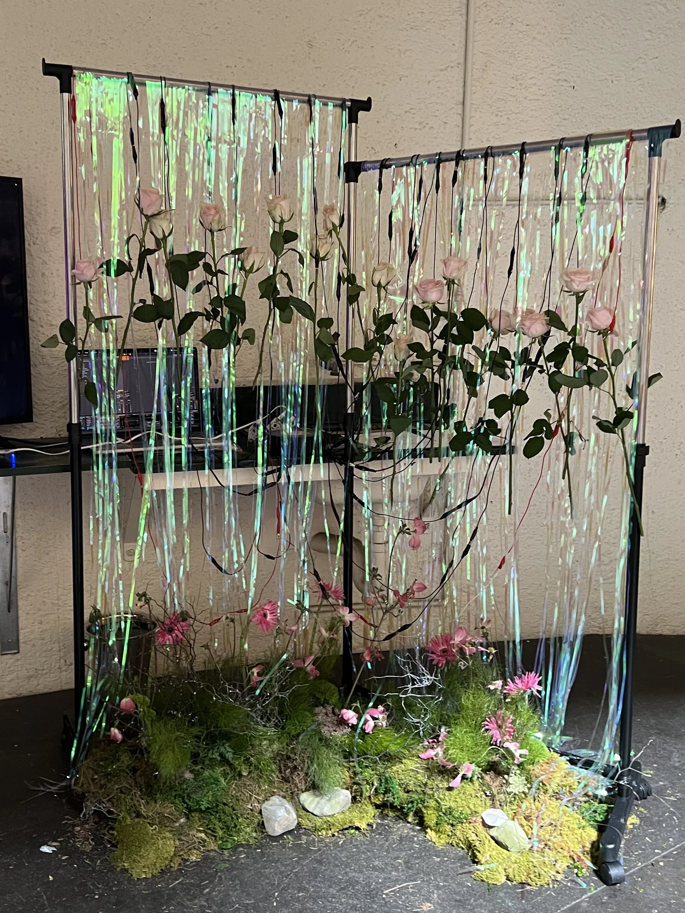
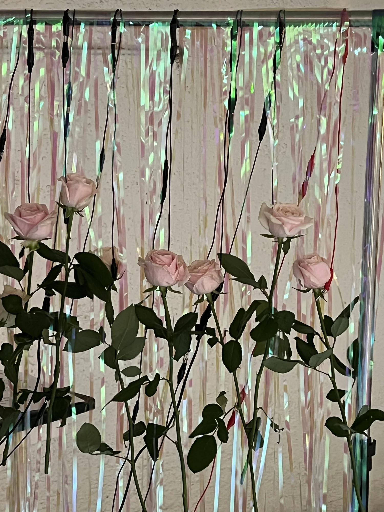
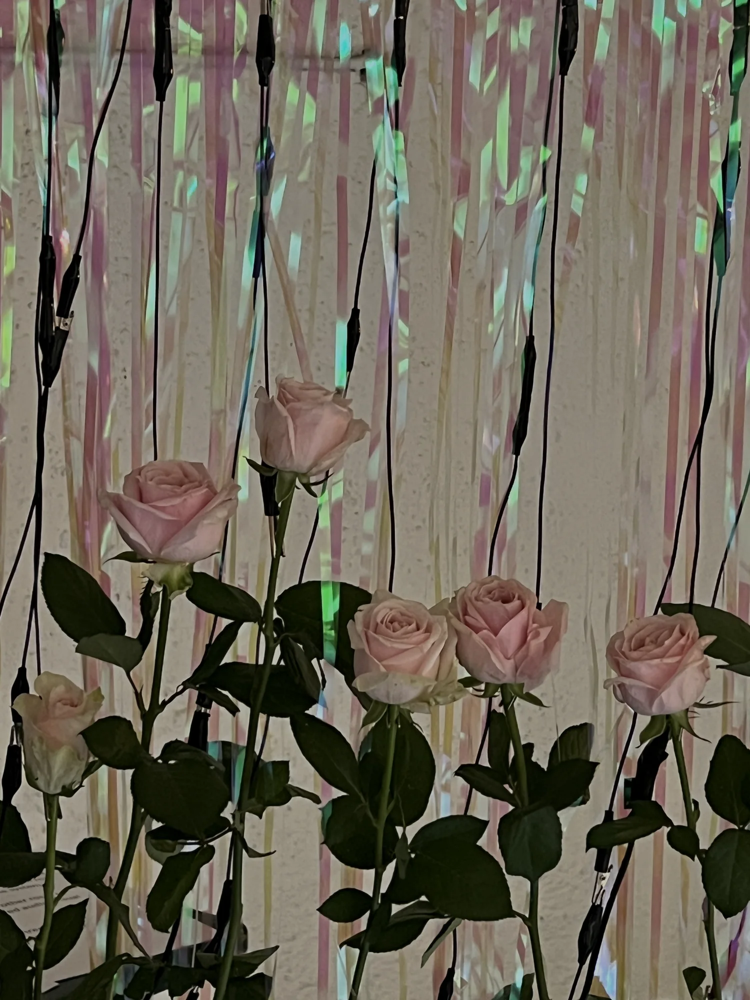
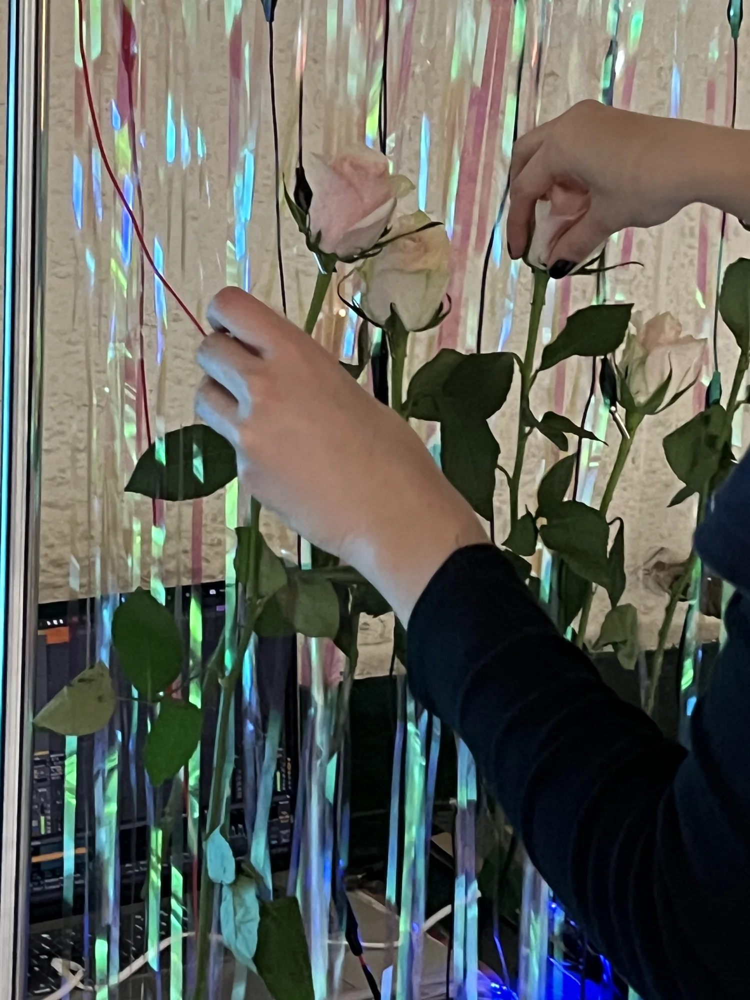
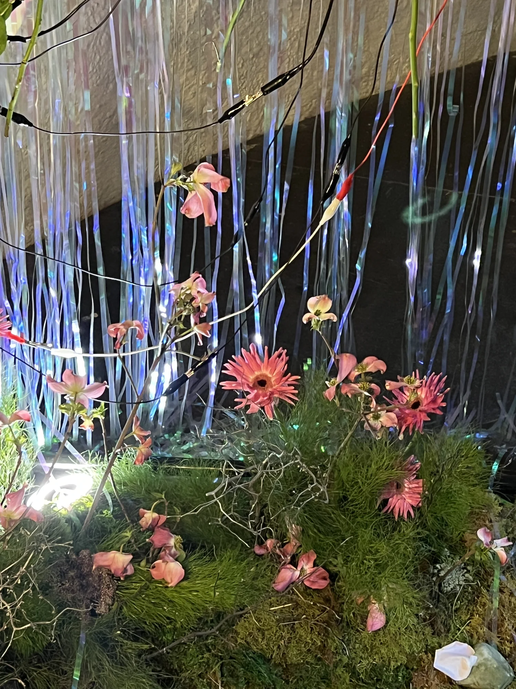
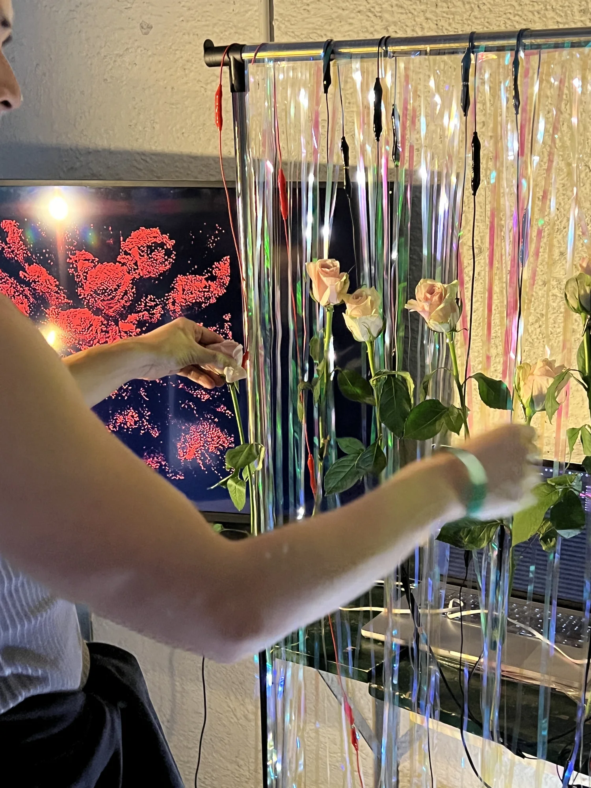

Bugskin Chapter 2
Norla Dome에서 선보인 공중에 매단 장미 설치.

인터랙티브 오디오비주얼 환경 안에 생장미를 공중에 매달아 구성한 Meta Rose의 전시입니다.
전시 맥락
Meta Rose는 2025년 11월 멜버른 Docklands의 Norla Dome에서 열린 Bugskin Chapter 2 그룹전에서 전시되었습니다. 장미 인터페이스와 그 공간적 배치를 그룹전의 조건에 맞춰 구성한 설치입니다.
공중에 매단 장미 인터페이스
사운드와 무빙이미지로 이루어진 Meta Rose의 인터랙티브 환경 안에 생장미를 공중에 매달았습니다. 꽃의 물질성을 전시 공간 안에 드러내는 이 배치는 촉각적 인터페이스를 해당 전시를 위한 공간 구성으로 확장했습니다.
주요 기록
Visual Index →




